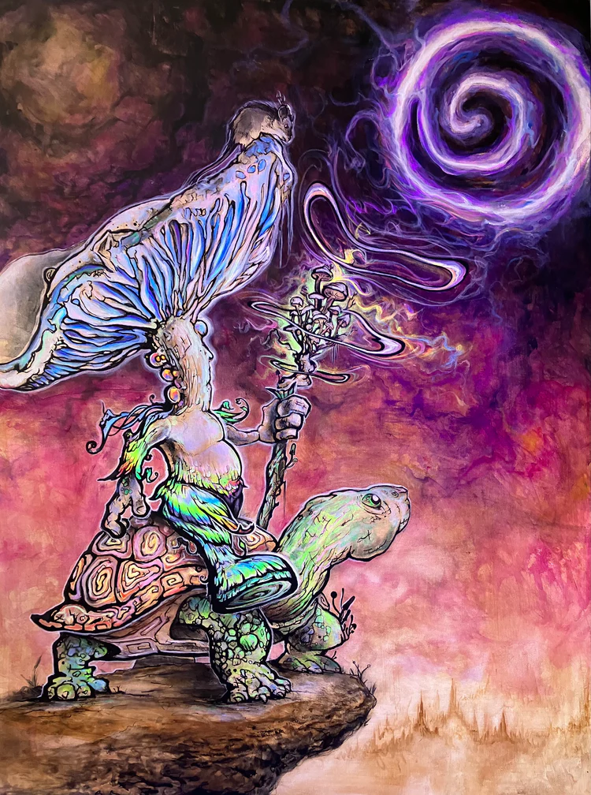
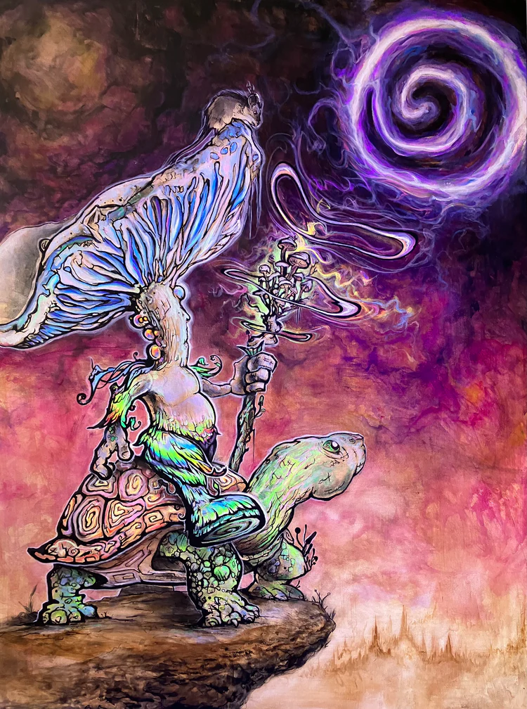

Featured Visual Artist
March 2023
Aaram Kamali
One of the most well-known EDM festivals in the USA is Electric Daisy Carnival (EDC). This festival takes place in Las Vegas, Nevada, and attracts over 400,000 people each year. EDC features some of the biggest names in EDM, as well as up-and-coming artists, and boasts multiple stages with elaborate production designs, carnival rides, and interactive art installations. What sets EDC apart from other festivals is its focus on creating a unique and immersive experience for its attendees, with performers dressed in elaborate costumes, pyrotechnics, and special effects that make it feel like a different world.
 
